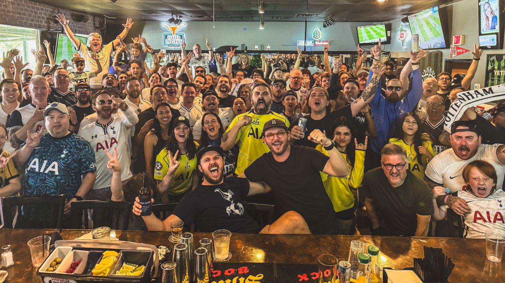
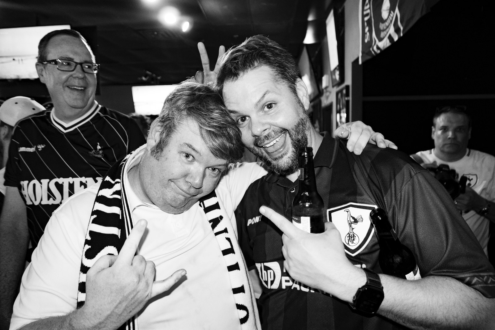

The place
A Proper Sports Pub
Tramps sits on the north side of Research Boulevard, just off the 183 frontage. It's a dive in the good sense: dark, comfortable, more screens than you'd expect, and enough room that a crowd doesn't turn into a scrum. It's been our home since 2012.
What makes it work for us is simpler than atmosphere. Step inside and look around and it's plainly a Spurs bar. They open early, they put our match on every screen with the sound up, and they've been doing it long enough that nobody has to be asked twice.

Turning up
What To Expect
There's no cover and no list. Walk in, find the shirts, sit down, introduce yourself. Visiting supporters and complete newcomers are equally welcome, and if it's your first time at Tramps we'll buy you a beer at halftime.
Most weekends that means a nine o'clock kickoff, coffee and breakfast on the table, and a room that gets loud twice and quiet once.
Nobody checks how long you've supported the club, and first-timers usually end up back the following week.

but not quite all of them
Getting there
8565 Research Blvd
Austin, TX 78758 · north of US-183, lot parking out front
- Address
- 8565 Research Blvd
Austin, TX 78758 - Phone
- (512) 837-3500
- Parking
- Free lot out front, more around the side in the Target parking lot
- Their site
- mistertramps.org